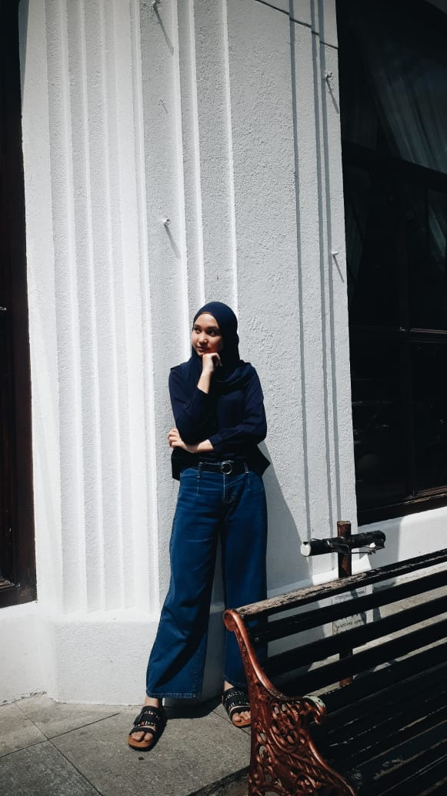

Gallery
Begitulah keajaiban fotografi, tidak hanya mengabadikan setiap momen penting dalam hidup, tetapi juga membekukan kenangan yang ingin diingat.
Hello!!
THIS IS ME
Kumpulan dokumentasi perkembangan proses mencapai tujuan.
Lesson learn dari tugas ini adalah saya menjadi tahu bagaiman cara membuat website statis dengan berbagai macam elemen. Seperti bisa menyisipkan tabel, gambar, peta lokasi, video, link ke website baik internal atau eksternal.
Mengoperasikan microsoft office.
Mengedit video, foto,dan template
Berolahraga
Bermusik
Harapan saya setelah lulus dari JTK adalah bisa bekerja pada perusahaan IT dengan bisa mengimplementasikan dari ilmu yang sudah didapat dan bisa mengembangkan skill saya menjadi lebih baik
Mahasiswi Politeknik Negeri Bandung Jurusan Teknik Komputer dan Informatika
Program studi D4-Teknik Informatika. Saya sekarang berusia 19 tahun.
Motto Hidup
Mulai dari tempatmu berada
Gunakan yang kamu punya
Lakukan yang kamu bisa

Asri Husnul Rosadi
Cimahi, 05 November 2003
Teliti, Jujur, Disiplin
Hobi
Bermain Bulu Tangkis
Bermain voli
Membaca buku
Mendengarkan musik
Menonton film
| Senin | Selasa | Rabu | kamis | Jumat | |
|---|---|---|---|---|---|
| 1 | SDA | PpKn | Pend. Agama | Proyek 1 | |
| 2 | SDA | TEKPROG | B. INGGRIS | Proyek 1 | |
| 3 | SDA | TEKPROG | B.INGGRIS | Proyek 1 | |
| 4 | SDA | B. INDONESIA | Proyek 1 | ||
| 5 | Proyek 1 |
Begitulah keajaiban fotografi, tidak hanya mengabadikan setiap momen penting dalam hidup, tetapi juga membekukan kenangan yang ingin diingat.